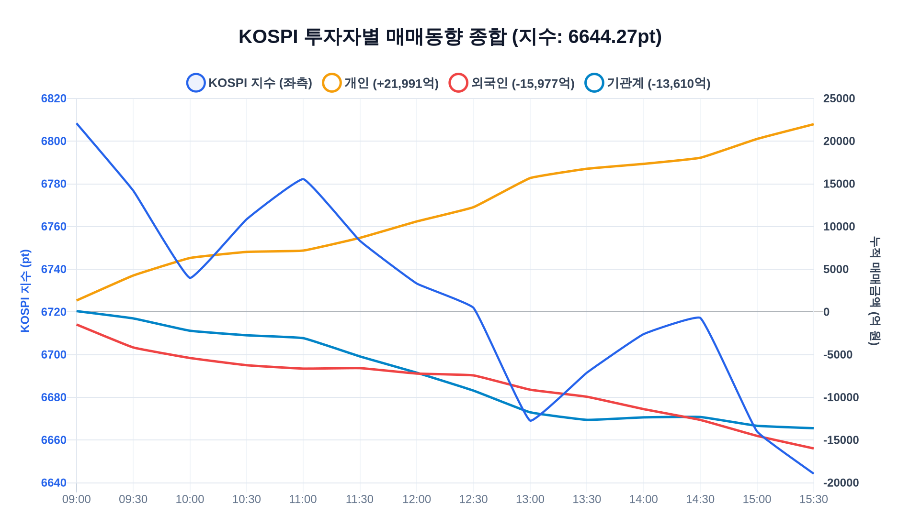
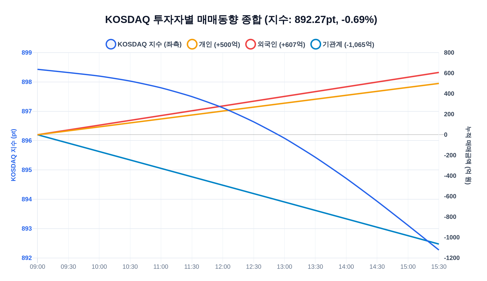
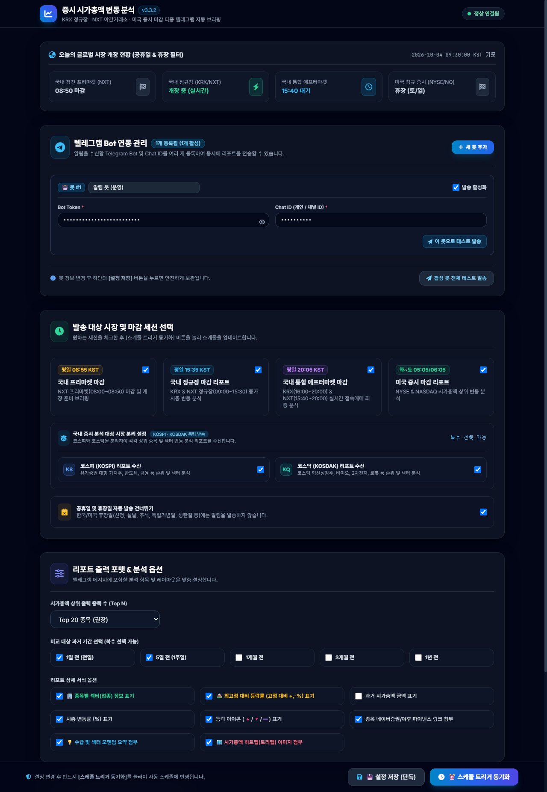
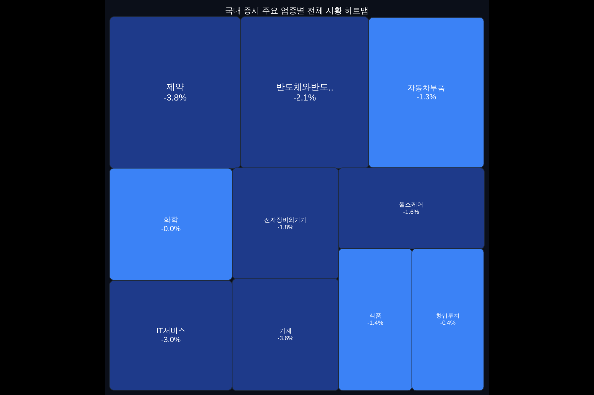

Google Apps Script(GAS)와 Modern TailwindCSS Web UI 기반으로 개발된 한국 증시(NXT 프리마켓 / KRX·NXT 정규장 / 통합 애프터마켓) 및 미국 증시(US 본장) 시가총액 변동 자동 분석 및 텔레그램 리포팅 시스템입니다.
💡 영웅문 [0251] 스타일 다중축(Dual-Axis) 4선 복합 차트: 좌측축(지수 pt)과 우측축(누적 금액 억 원) 위에 KOSPI/KOSDAQ 지수(파랑), 개인(주황), 외국인(빨강), 기관계(청록) 4개 곡선을 장중 시간대별(09:00~15:30 전 구간 200개 시계열)로 완벽히 재현하여 지수 흐름과 수급 주체의 방향성을 100% 동일하게 한눈에 파악합니다.
| 코스피(KOSPI) 투자자별 종합 차트 | 코스닥(KOSDAQ) 투자자별 종합 차트 |
|---|---|
 |
 |
💡 v3.3.2 최신 대시보드 화면: KOSPI/KOSDAQ 독립 수신, 4대 시장 세션 스케줄러, WICS 섹터 및 최고점 대비 등락률(고점 대비 +,-%) 표기 옵션이 반영된 반응형 UI입니다.

💡 한경 마켓맵 / 핀비즈 스타일 계층형 트리맵: 섹터별 클러스터링과 크고 굵은 종목명 폰트(최대 38pt BOLD)가 적용된 초고해상도 히트맵입니다.

👤개인 +29,972억 | 🏢외국인 -20,704억 | 🏛기관계 -16,789억 실시간 순매수/순매도 누적 금액 최상단 표기.| 세션 구분 | 마켓 운영 시간 | 발송 시각 (KST) | 설명 |
|---|---|---|---|
| 🌅 국내 장전 프리마켓 | NXT: 08:00 ~ 08:50 | 평일 08:55 | NXT 장전 접속매매 마감 직후 개장 준비 브리핑 |
| 📊 국내 정규 메인마켓 | KRX: 09:00~15:30 / NXT: 09:00:30~15:20 | 평일 15:35 | 정규 거래 세션 종가 기준 시가총액 변동 분석 |
| 🌙 국내 통합 애프터마켓 | KRX: 16:00~20:00 / NXT: 15:40~20:00 | 평일 20:05 | 양대 거래소 애프터마켓 실시간 접속매매 마감 분석 |
| 🇺🇸 미국 정규 증시 | 미 현지: 09:30 ~ 16:00 | 화~토 05:05 / 06:05 | NYSE & NASDAQ 마감 분석 (DST 자동 연동) |
[📊 국내 정규장 - 코스피(KOSPI) 마감 시총 분석]
🗓 기준 일시: 2026-10-13 15:35:00 (KST)
📊 조회 범위: 상위 20개 종목
📌 순위 변동: ▲ 상승 | ▼ 하락 | ➖ 유지
📌 강조 아이콘: 🚀 10계단+ 급등 | 🔥 5계단+ 상승 | 🚨 10계단+ 급락
───────────────────
📈 코스피 종합 시황
└ 지수: 2,580.40 pt | 🔺 +12.30 pt (+0.48%)
└ 당일 수급: 👤개인 +29,972억 | 🏢외국인 -20,704억 | 🏛기관계 -16,789억
───────────────────
#1 <a href="https://finance.naver.com/item/main.naver?code=005930">삼성전자</a> <code>(KOSPI · 전기 · 전자)</code>
└ 현재가: 274,500원 | 🔺 +2.43%
└ 시가총액: 1,604조 8,035억원
└ 고점 대비: -27.76% (최고 380,000원)
└ 과거 대비: 1일 전(유지 / +2.4%) | 5일 전(유지 / +4.2%) | 1개월 전(유지 / +8.4%) | 3개월 전(유지 / +12.5%) | 1년 전(유지 / +18.9%)
... (중략) ...
───────────────────
💡 [선택 시점별 순위 급등/급락 핵심 요약]
■ 1년 전 대비 순위 변동 요약:
• 최대 순위 급등: 두산에너빌리티 [기계 · 방산] 🚀 (▲23계단 / +120.5% / 2조 4,000억원)
• 최대 순위 급락: LG화학 [2차전지 · 화학] 🚨 (▼20계단 / -45.1% / 3조 9,000억원)
• 주요 순위 상승: 한화에어로스페이스(기계 · 방산)(🚀 ▲14계단)
• 주요 순위 하락: POSCO홀딩스(철강 · 금속)(🚨 ▼13계단)| 버전 | 출시 일자 | 주요 기능 및 변경사항 |
|---|---|---|
| v3.3.2 | 2026-10-13 | • 투자자 수급 4선 차트 텔레그램 전송 안정화: QuickChart CDN 단축 URL 파라미터 충돌(HTTP 400 Bad Request) 방지를 위한 스마트 캐시버스팅 예외 처리 적용 • 장중 수급 데이터 전 구간(09:00~15:30) 동기화: startIdx 0~3(총 200개 아이템) 시계열 수집 정상화로 영웅문 [0251] HTS와 100% 동일 곡선 일치 |
| v3.3.1 | 2026-10-09 | • UI/스크린샷 갱신: Web App 대시보드 버전 배지 v3.3.1 동기화 및 문서 캡처 이미지 최신화 |
| v3.3.0 | 2026-10-08 | • 영웅문 [0251] 스타일 다중축 4선 복합 차트 도입: 좌측(지수 pt) + 우측(누적 수급 억 원) 4선(지수/개인/외국인/기관계) 렌더링 • 최상단 당일 3대 수급 텍스트 브리핑: 네이버 공식 수급 API 연동을 통한 개인/외인/기관 순매수 금액 표기 |
| v3.2.0 | 2026-10-06 | • 한경 마켓맵 / 핀비즈 스타일 계층형 히트맵 엔진 구축: 섹터별 클러스터링 및 시총 가중치 트리맵 타일링 • 굵은 종목명 폰트 최적화: 대형주 최대 38pt BOLD 및 최소 16pt 이상 가독성 강화 |
GitHub 저장소: https://github.com/moozuknet/StockRankInfo
개발 및 기술 가이드: DEVELOPMENT_GUIDE.md 참고